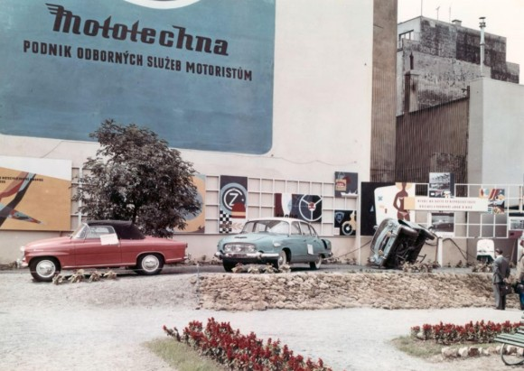

História automobilov Škoda
Vitaj na portáli o škodovkách! Nájdeš tu stručný prehľad modelov od roku 1969 — od legendárneho „Embečka“ až po modernú Octaviu.
Škoda nezačínala ako výrobca áut. Jej zakladatelia pôvodne vytvorili spoločnosť na výrobu bicyklov. Ako tento nápad vznikol? V decembri 1895 sa Laurinovi pokazil bicykel. Keď si ho šiel dať opraviť, bol sklamaný neochotou personálu. Preto spolu s Klementom založili vlastnú firmu na výrobu bicyklov.



Moje prvé auto bolo Škoda Favorit 135 LS – červená farba.
Moje súčasné auto je Škoda Octavia III 1.5 TSI.